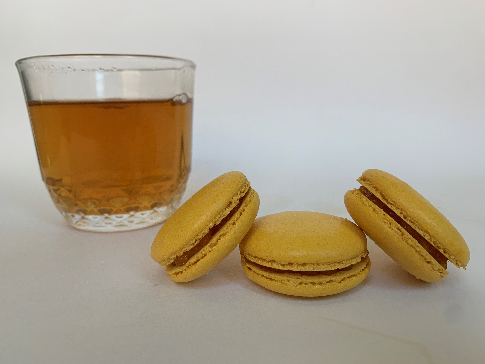

Macaron House
Mango Macarons
Mango Macarons-
A light and crispy shell with a soft and chewy middle. The sweet mango jam filling is made with fresh mangos that were cooked down. There is a hint of fresh lemon juice that was added to bring out the mango flavor. This delightful treat is refreshing and light. It is a great option for those who cannot have dairy. It's best to be eaten on the day of delivery, but will be just as great stored in the fridge the next few days.
Brownie Cookies

Brownie Cookies-
This is the perfect cross between brownie and a cookie. It has the rich, chocolatey flavor of a brownie and a crispy edge. It's just like having the corner brownie from the pan, but all sides are crispy. It is the perfect way to indulge and reward yourself. Store at room temperature. Enjoy with a glass of milk or a cup of coffee.